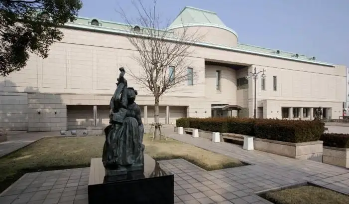
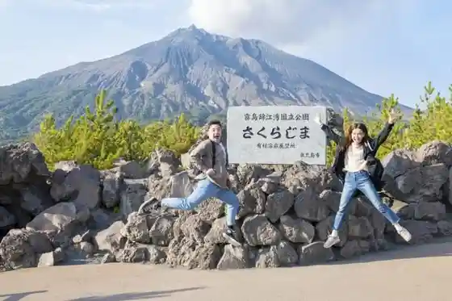
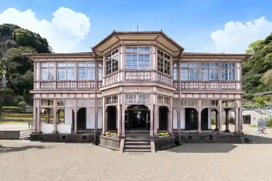
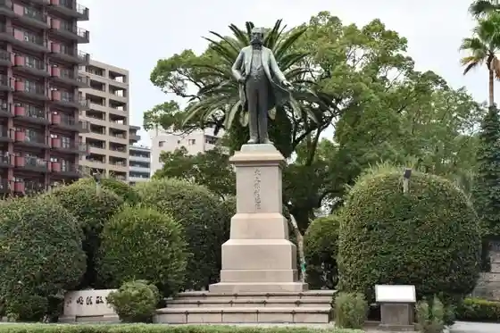

Kagoshima, Kagoshima
Kagoshima · Kagoshima
Kagoshima
Highlighted on the Kagoshima map.

Sights
Ari Village Yogan Tembo Tokoro

Kyu Kagoshima Boseki Tokoro Gishi Kan (Ijinkan)

Ishin Furusato Kan
Okubo Toshimichi Dozo

Kagoshima Ken Rekishi Bijutsu Center Reimei Kan
Kagoshima Ritsu Art Museum
Kagoshima Hirakawa Dobutsu Park
Io Warudo Kagoshima Aquarium
Ishibashi Memorial Park Ishibashi Memorial Museum
Saigotakamori Dozo
Satsuma Gishi Hi
Zabieru Park
Shimazu Ie History Museum Shoko Shusei Kan
Shiroyama Park (Lookout Nature Promenade)
Kuni Shitei Meisho Sengan Sono
Tenmonkan
Hayashi Fumiko Bungaku Hi Furusato Park
Kurokami Maibotsu Torii
Minato Odori Park
Kagoshima Kenko no Mori Park
Zabieru Joriku Kinenhi
Iso Beach
Kagoshima Prefectural Museum
Kagoshima Ritsu Science Museum
Nagashima Art Museum
Amami Village
Kinko Wan Park (Campground)
Oashisugaa Yoshino Park (Kagoshima Prefectural Yoshino Park)
Kodama Art Museum
Miyake Art Museum
Kagoshima Shimazu Ie Hakasho (Fukusho Jiseki)
Zabieru Kinen Seido
Shokoku Shrine
Karasu Shima Tembo Tokoro
Yogan Nagisa Promenade
Sakura Shima Bijita Center
Roadside Station Sakura Shima Hi no Shima Megumi Kan
Sakura Shima Shizen Kyoryu Park
Yu Yuki Taira Tembo Tokoro
Sakurajima Shirahama Onsen Center
Saido (Saido) Beach
Sakura Shima Ferii
Sakura Shima
Roadside Station Kiire (Kagoshima Marinpia Kiire) Hachiman Onsen Hoyo Kan
Sengan Taira Nature Park
Naka Village Shinya Art Museum
Irisa no Ta no Kami
Yaeyama Park Kyanpu Village
Hana O Kakure Nembutsu Hora
Hana O Shrine
Tango Kyoku Hakasho
Teru Raku Sato Yoshida Kan
Shimazu Chugi Ko Zo
Shimazu Hisamitsu Ko Zo
Hirata Yugei Dozo
Togo Heihachiro Gensui Dozo
Godai Tomoatsu Zo
Sakamoto Ryoma Shinkon no Tabi Hi
Wakaki Satsuma no Gunzo
Hozan Horu (Kagoshima Kembun Ka Center)
Reimbo Beach
(Sakura Shima) Yogan Nagisa Koen Ashiyu
Yo Yama Art Museum (Genzai Kyukanchu)
Jigen Ryu Heiho Tokoro Shiryo Kan
Shimazu Satsuma Kiriko Gyarariishoppu Iso Kogei Kan
Kagoshima Shiro (Tsurumaru Shiro) O Romon
Shigaku Ko Ato
Jigan Tera Park
Kagoshima Miyako City Nogyo Center
Kagoshima Bunka Kogei Village
Kagoshima Kencho Tembo Robii
Terayama Park
Sho Mine (Shoho)
Ferii Yaku Shima 2 Kagoshima Kinko Wan Samanaito Daihanabitaikai Noryo Kanran Fune
Supa Land Hadaka Raku Ryo
Meisen no Sato Koriyama Onsen
Tenmonkan Mujaki
Ari Village Ya Korimoto Main Shop
Tenmonkan Fesuteibaro Karaimo Warudo
Sanjusangendo
Kurobuta Ryori Juan Chuoeki Nishiguchi Mise
Tenmonkan Unagi no Matsu Yoshi
Akashi Ya Main Shop
Seicho Satsuma Ryori Kumaso Tei
Gatsu Yo Iori (Kagoshima Chuoeki Miyage Yokocho Mise)
Kagoshima Ramen Garyu Kaze Tenmonkan Main Shop
Sakana Sho
Kagoshima Kurobuta Roppaku Tei
Kurobuta Ryori
Ichiniisan Tenmonkan Mise
Amyu Plaza Kagoshima
Muso Kura Satsuma Muso
Tennen Onsen Yu no Yama
Meito Ashikari Onsen
Nama Ken (Nukumi) Beach
Shimazu Nariakira Ko Zo
Guriin Farm Kiire (Kagoshima Kanko Nogyo Park)
Akamizu Tembo Plaza
Ichijo Tori Sake Saki
Tabi no Eki Sakura Shima Sakura Shima Bussan Kan
Ikeuo Chanko Asa no Umi
Yakiniku & Shabushabu Matsusaka
Kagoshima Ken Gokoku Shrine
Arata Hachiman Shrine
Kyu Shusei Kan (Hansharo Ato)
Sakura Shima Kaigunkichi Ato
Kagoshima Chuoeki
Saigotakamori Shuen no Chi
Sakurajimai Land Byu
Kagoshima Machi Aruki Kanko Suteshon
Jidori to Sakana Sei Re Ya (Hareya)
Saigotakamori Seitan no Chi
Saigo Takeyashiki Ato
Dauma Raku no Hi
Nanshu Okina Kaikon no Chi no Hi
Saigo Noyashiki Ato
So Gessho no Haka
Saigo Ie no Haka
Sakura Shima Tennen Onsen Hori Experience (Ari Village Coast)
Kagoshima Honko Gawa Sakura Shima Feriitaminaru
Sakura Shima Gawa Sakura Shima Feriitaminaru
Yamagata Ya
Tsukuyomi Shrine
Famiri Iori Haikara Tei (Yojiro Main Shop)
Maruya Garden Zu
Marinpoto Kagoshima
Iruka Suiro (Io Warudo Kagoshima Aquarium)
Kagoshima Bu Land Shoppu
Rekishi Rodo ” Ishin Dorama no Michi ”
Rekishi Rodo “ Ishin Furusato no Michi ”
Kyu Shimazu Shi Tamasato Tei Garden
Zo Samurai Kan Embu Kan Igaku In Ato
Satsuei Senso (Tenpozan) Hodai Ato
Saigo Nanshu Okina Takuchi Ato (Kaminozono Town)
Okubo Toshimichi Oitachi no Chi
Okubo Toshimichi Seitan Chi
Murata Shinpachi Tanjo Chi no Hi
Gessho Shonin Iseki no Hi
Shin Hato Hodai Ato
Seinan Senso no Judan Ato
Taga Yama Park
Kawabe Toge
Shakuzan Lookout (Ibusuki Sukai Line)
Su Su Hara Lookout (Ibusuki Sukai Line)
Hidaka Lookout (Ibusuki Sukai Line)
Nanshu Park
Hara Go Sha Shrine
Yojirogahama Chosui Michi
Taniyama Shrine
(Sakura Shima) Yogan Nagisa Park
Kuromatsu Shinsui Park
Nanshu Hashi
Sakura Shima Bussan Kan Lookout
Seinan Senso Satsugun Hon'ei Ato
Kagoshima Kankyo Mirai Kan
Nangoku Kantsurii Club
Kagoshima Garden Gorufu Kurabu
MINATO cafe
SAKURAJIMA TRAVEL STORE
Daikoku Onsen
Shiroyama Choju Izumi
Hanano Onsen Tanuki Yu
Arato So Onsen
Men Takumi Ki Rin
Kagomania
Iwaya Kannon
Satsuma Isaku Washi
Kanmachia
Sakura Shima Daikon no Shukaku Experience Farm Land Sakura Shima
JR Kagoshima Eki
Unagi no Matsushige
Kagoshima Kotsukyoku [ Shiei Basu ]
Happy Point
Satsumahan Ko Minka Kareteria Sara
Kamoike Tarumi Ferii
Ine Oto Kan
Sutabakkusukohii Kagoshima Sengan Sono Mise
Kaya Cafe Beachside Kayakafe Beach Saido
Iso no Ryo Bo Mochi
Matsumoto Furesshu Kan O Chabatake
(Satsumachi Kagoshima Chuoeki) Miyage Alley (AMU WE) Gurume Alley
Satsuma Joki Ya JR Kagoshima Chuoeki Mise
Sengan Sono Bu Land Shoppu
Kagoshima Chuoeki Higashiguchi Ekimaehiroba Tourist Information
Cafe Shirahama
Susumu Ya Saten Kagoshima
CHIN JUKAN POTTERY Kissashitsu
Yanagawa Himuro
Shiroyama Shiizuningu
Kagoshima Kindai Literature Museum Kagoshima Meruhen Kan
Takashi Cha
Senterasu Tenmonkan
Kurozu Farm CAFE AND MARKET
Fesuteibaro Kagoshima Chuoeki Mise
Fesuteibaro Yamagata Ya Mise
Akashi Ya JR Kagoshima Chuoeki Mise
Akashi Ya Yamagata Ya Mise
Ari Village Ya Kagoshima Meihin Kuramise
Akashi Ya Chuo Mise
Ari Village Ya Yamagata Ya Mise
Yae Village
Marinpia Kiire
Kagoshima Beikuruzu
Himitsukichi N Farm
Kagoshima Tourist Information (Tenmonkan)
Tenshoin Zo
Kanko Koryu Center
Uotafuronto Park
Sakura Shima Tourist Information (Sakura Shima Konshieruju Center)
Kagoshima Chuoeki Sogo Tourist Information
Kagotsuma Furusato Yatai Village
Nama Ken Beach
Jigan Tera Somen Nagashi
Yokado Kagoshima
Kagoshima Kamoike Umi Zuri Park
Kagoshima Sakura Shima Umi Zuri Park
Furusato Koko Rekishikan
Saigo Nanshu Kensho Kan (Nanshu Bochi Nanshu Shrine)
Bodooku (Shiokaze Tori)
Meizan Hori (Rojiura no Resutoran)
Furusato Onsen Sato
Tenmonkan Ato no Hi
Saigo Cave
Imaizumi Shimazu Kahon Yashikiato (Atsuhime Tanjo Chi)
Kotsuki Kawa Kahan
Rekishi to Bunka no Michi
Komatsu Taito Zo
Kagoshima Castle Ruins
Kiire Kyu Fumoto
Sakura Shima Ibento Hiroba Zon (Sakura Shima Akamizu Saisekijo Atochi)
Shirasusopu
Kagoshima Glamping YOSHIZORA (Yoshizora)
Yae no Tanada
Kagoshima Sakana City Ba Tour
Matsukata Seigi Yuki Zo
Tokiwa Gorin to Gun
Zabieru Tai Shika Kinenhi
Kurokami Tembo Tokoro
Tansho Sono
Saigotakamori Tsugumichi Tanjo Chi
Satsuma Gishi no Haka
Okubo Toshimichi Tanjo Chi
Sakura Shima Kokusai Kazan Sabo Center
Hirakawa Mariinamarushie
THE ROOF
Kamoike Hieda Shrine
Kinko Wan Tsuri Experience
Kinko Wan Tsuri Experience
Sengan Sono Neko Shrine
JR Sengan Sono Eki
Sakura Shima Kafe
Shieraton Kagoshima
Kurobuta Shabu Nabe Hachiman